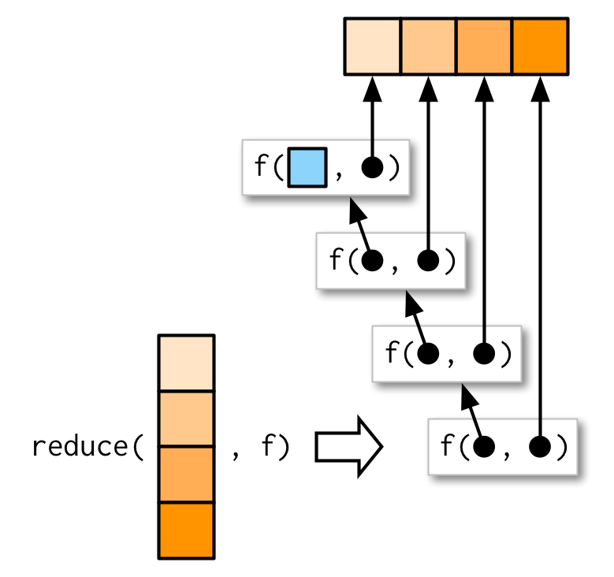

10 Functionals
10.1 Introduction
“To become significantly more reliable, code must become more transparent. In particular, nested conditions and loops must be viewed with great suspicion. Complicated control flows confuse programmers. Messy code often hides bugs.”
— Bjarne Stroustrup
A functional is a function that takes a function as an input and returns a vector as output. Here’s a simple functional: it calls the function provided as input with 1000 random uniform numbers.
randomise <- function(f) f(runif(1e3))
randomise(mean)
#> [1] 0.506
randomise(mean)
#> [1] 0.501
randomise(sum)
#> [1] 489The chances are that you’ve already used a functional. You might have used for-loop replacement like base R’s lapply(), apply(), or tapply(), or maybe purrr’s map() or variant; or maybe you’ve used a mathemetical functional like integrate() or optim(). All functionals take a function as input (among other things) and return a vector as output.
A common use of functionals is as an alternative to for loops. For loops have a bad rap in R. They have a reputation for being slow (although that reputation is only partly true, see Section 3.5.1 for more details). But the real downside of for loops is that they’re not very expressive. A for loop conveys that it’s iterating over something, but doesn’t clearly convey a high level goal. Instead of using a for loop, it’s better to use a functional. Each functional is tailored for a specific task, so when you recognise the functional you immediately know why it’s being used. Functionals play other roles as well as replacements for for-loops. They are useful for encapsulating common data manipulation tasks like split-apply-combine, for thinking “functionally”, and for working with mathematical functions.
Functionals reduce bugs in your code by better communicating intent. Functionals implemented in base R and purrr are well tested (i.e., bug-free) and efficient, because they’re used by so many people. Many are written in C, and use special tricks to enhance performance. That said, using functionals will not always produce the fastest code. Instead, it helps you clearly communicate and build tools that solve a wide range of problems. It’s a mistake to focus on speed until you know it’ll be a problem. Once you have clear, correct code you can make it fast using the techniques you’ll learn in Section 24.
Using functionals is a pattern matching exercise. You look at the for loop, and find a functional that matches the basic form. If one doesn’t exist, don’t try and torture an existing functional to fit the form you need. Instead, just leave it as a for loop!
It’s not about eliminating for loops. It’s about having someone else write them for you!
Outline
Prerequisites
This chapter will focus on functionals provided by the purrr package. These functions have a consistent interface that makes it easier to understand the key ideas than their base equivalents, which have grown organically over many years. I’ll compare and contrast base R functions as we go, and then wrap up the chapter with a discussion of base functionals that don’t have purrr equivalents.
Many R users feel guilty about using for loops instead of apply functions. It’s natural to blame yourself for failing to understand and internalise the apply family of functions. However, I think this is like blaming yourself when embarass yourself by failing to pull open a door when it’s supposed to be pushed open31. It’s not actually your fault, because many people suffer the same problem; it’s a failing of design. Similarly, I think the reason why the apply functions are so hard for so many people is because their design is suboptimal.
10.2 My first functional: map()
The most fundamental functional is purrr::map()32. It takes a vector and a function, calls the function once for each element of the vector, and returns the results in a list. In other words, map(1:3, f) yields list(f(x[[1]]), f(x[[2]]), f(x[[3]])).
triple <- function(x) x * 3
map(1:3, triple)
#> [[1]]
#> [1] 3
#>
#> [[2]]
#> [1] 6
#>
#> [[3]]
#> [1] 9Or, graphically:

The implementation of map() is quite simple. We allocate a list the same length as the input, and then fill in the list with a for loop. The basic implementation is only a handful of lines of code:
simple_map <- function(x, f, ...) {
out <- vector("list", length(x))
for (i in seq_along(x)) {
out[[i]] <- f(x[[i]], ...)
}
out
}The real purrr::map() function has a few differences: it is written in C to eke out every last iota of performance, preserves names, and supports a few shortcuts that you’ll learn about shortly.
The base equivalent to map() is lapply(). The only difference is that lappy() does not support the helpers that you’ll learn about below, so if you’re only using map() from purrr, you can skip the additional package and use base::lapply() directly.
10.2.1 Producing atomic vectors
map() returns a list. This makes map() the most general of the “map” family because you can put anything in a list. There are four more specific variants, map_lgl(), map_int(), map_dbl() and map_chr(), that return atomic vectors:
map_chr(mtcars, typeof)
#> mpg cyl disp hp drat wt qsec vs
#> "double" "double" "double" "double" "double" "double" "double" "double"
#> am gear carb
#> "double" "double" "double"
map_lgl(mtcars, is.double)
#> mpg cyl disp hp drat wt qsec vs am gear carb
#> TRUE TRUE TRUE TRUE TRUE TRUE TRUE TRUE TRUE TRUE TRUE
map_dbl(mtcars, mean)
#> mpg cyl disp hp drat wt qsec vs am
#> 20.091 6.188 230.722 146.688 3.597 3.217 17.849 0.438 0.406
#> gear carb
#> 3.688 2.812
n_unique <- function(x) length(unique(x))
map_int(mtcars, n_unique)
#> mpg cyl disp hp drat wt qsec vs am gear carb
#> 25 3 27 22 22 29 30 2 2 3 6These examples rely on the fact that data frames are lists containing vectors of the same length:

Like map(), the input and the output must be the same length, so you can not return multiple values. When debugging problems like this, it’s often useful to switch back to map() so you can see what the problematic output is.
pair <- function(x) c(x, x)
map_dbl(1:3, pair)
#> Error: Result 1 is not a length 1 atomic vector
map(1:3, pair)
#> [[1]]
#> [1] 1 1
#>
#> [[2]]
#> [1] 2 2
#>
#> [[3]]
#> [1] 3 3simple_map_dbl <- function(x, f, ...) {
out <- double(length(x))
for (i in seq_along(x)) {
val <- f(x[[i]], ...)
if (length(val) != 1 || !is.numeric(out)) {
stop("Result ", i, " is not a length 1 atomic vector", call. = FALSE)
}
out[[i]] <- val
}
out
}Base R has two similar functions: sapply() and vapply().
sapply() tries to simplify the result to an atomic vector, whereever possible. But this simplifiation depends on the input, so sometimes you’ll get a list, sometimes a vector, and sometimes a matrix. This makes it difficult to program with.
vapply() allows you to provide a template that describes the output shape. If you want to stick to with base R code you should always use vapply() in your functions, not sapply(). The primary downside of vapply() is its vebosity: the equivalent to map_dbl(x, mean, na.rm = TRUE) is vapply(x, mean, na.rm = TRUE, FUN.VALUE = double()).
10.2.2 Anonymous functions and helpers
Instead of using map() with an existing function, you can create an inline anonymous function (as mentioned in Section (first-class-functions)):
map_dbl(mtcars, function(x) length(unique(x)))
#> mpg cyl disp hp drat wt qsec vs am gear carb
#> 25 3 27 22 22 29 30 2 2 3 6Anonymous functions are very useful, but the syntax is verbose. So purrr offers a shorthand:
map_dbl(mtcars, ~ length(unique(.x)))
#> mpg cyl disp hp drat wt qsec vs am gear carb
#> 25 3 27 22 22 29 30 2 2 3 6That also makes for a handy way of generating random data:
x <- map(1:3, ~ runif(2))
str(x)
#> List of 3
#> $ : num [1:2] 0.281 0.53
#> $ : num [1:2] 0.433 0.917
#> $ : num [1:2] 0.0275 0.8249Reserve this syntax for short and simple functions. A good rule of thumb is that if your function involves spans lines or uses {}, it’s time to name your function.
Inside all purrr functions you can create an anonymous function using a ~ (the usual formula operator, pronouned “twiddle”). You can see what happens by calling as_mapper(): the map functions normally do that for you, but it’s useful to do it “by hand” to see what’s going on:
as_mapper(~ length(unique(.x)))
#> function (..., .x = ..1, .y = ..2, . = ..1)
#> length(unique(.x))The function arguments look a little quirky but allow you to refer to . for one argument functions, .x and .y. for two argument functions, and ..1, ..2, ..3, etc, for functions with an arbitrary number of arguments.
purrr also provides helpers for extracting elements from a vector, powered by purrr::pluck(). You can use a character vector to select elements by name, an integer vector to select by position, or a list to select by both name and position. These are very useful for working with deeply nested lists, which often arise when working with JSON.
x <- list(
list(-1, x = 1, y = c(2), z = "a"),
list(-2, x = 4, y = c(5, 6), z = "b"),
list(-3, x = 8, y = c(9, 10, 11))
)
# Select by name
map_dbl(x, "x")
#> [1] 1 4 8
# Or by position
map_dbl(x, 1)
#> [1] -1 -2 -3
# Or by both
map_dbl(x, list("y", 1))
#> [1] 2 5 9
# You'll get an error if a component doesn't exist:
map_chr(x, "z")
#> Error: Result 3 is not a length 1 atomic vector
# Unless you supply a .default value
map_chr(x, "z", .default = NA)
#> [1] "a" "b" NAIn base R functions, like lapply(), you can provide the name of the function as a string. This isn’t tremendously useful as most of the time lapply(x, "f") is exactly equivalent to lapply(x, f), just more typing.
10.2.3 Passing arguments with ...
It’s often convenient to pass on along additional arguments to the function that you’re calling. For example, you might want to pass na.rm = TRUE along to mean(). One way to do that is with an anonymous function:
But because the map functions pass ... along, there’s a simpler form available:
This is easiest to understand with a picture: any arguments that come after f in the call to map() are inserted after the data in individual calls to f():

It’s important to note that these arguments are not decomposed; or said another way, map() is only vectorised over its first argument. If an argument after f is a vector, it will be passed along as is, not decomposed like the first argument:

Note there’s a subtle difference between placing extra arguments inside an anonymous function compared with passing them to map(). Putting them in anonymous function means that they will be evaluated every time f() is executed, not just once when you call map(). This is easiest to see if we make the additional argument random:
10.2.4 Argument names
In the diagrams, I’ve omitted argument names to focus on the overall structure. But I recommend writing out the full names in your code, as it makes it easier to read. map(x, mean, 0.1) is perfectly valid code, but it generates mean(x[[1]], 0.1) so it relies on the reader remembering that the second argument to mean() is trim. To avoid unnecesary burden on the brain of the reader33, be kind, and write map(x, mean, trim = 0.1).
This is the reason why the arguments to map() are a little odd: instead of being x and f, they are .x and .f. It’s easiest to the problem that leads to these names using simple_map() defined above. simple_map() has arguments x and f so you’ll have problems whenever the function you are calling has arguments x or f:
boostrap_summary <- function(x, f) {
f(sample(x, replace = TRUE))
}
simple_map(mtcars, boostrap_summary, f = mean)
#> Error in mean.default(x[[i]], ...):
#> 'trim' must be numeric of length oneThe error is a little bewildering until you remember that the call to simple_map() is equivalent to simple_map(x = mtcars, f = mean, bootstrap_summary) because named matching beats positional matching.
purrr functions reduce the likelihood of such a clash by using .f and .x instead of the more common f and x. Of course this technique isn’t perfect (because the function you are calling might still use .f and .x), but it avoids 99% of issues. The remaining 1% of the time, use an anonymous function.
Base functions that pass along ... use a variety of naming conventions to prevent undesired argument matching:
The apply family mostly uses capital letters (e.g
XandFUN).transform()uses more exotic prefix_: this makes the name non-syntactic so it must always be surrounded in`, as described in Section 3.2.1. This makes undesired matches extremely unlikely.- Other functional like
uniroot()andoptim()make no effort to avoid clashes; but they tend to be used with specially created funtions so clashes are less likely.
10.2.5 Varying another argument
So far the first argument to map() has always become the first argument to the function. But what happens if the first argument should be constant, and you want to vary a different argument? How do you get the result in this picture?

It turns out that there’s no way to do it directly, but there are two tricks you can use. To illustrate them, imagine I have a vector that contains a few unusual values, and I want to explore the effective of different amounts of trimming when computing the mean. In this case, the first argument to mean() will be constant, and I want to vary the second argument, trim.
The simplest technique is to use an anonymous function to rearrange the argument order:
Sometimes, if you want to be (too) clever, you can take advantage of R’s flexible argument matching rules (as described in Section ??). For example, in this example you can rewrite
mean(x, trim = 0.1)asmean(0.1, x = x), so you could write the call tomap_dbl()as:I don’t recommend this technique as it relies on the reader being very familiar with both the argument order to
.f, and R’s argument matching rules.
You’ll see one more approach to this problem that in Section 10.3.5.
10.2.6 Exercises
Use
as_mapper()to explore how purrr generates anonymous functions for the integer, character, and list helpers. What helper allows you to extract attributes? Read the documentation to find out.map(1:3, ~ runif(2))is a useful pattern for generating random numbers, butmap(1:3, runif(2))is not. Why not? Can you explain why it returns the result that it does?Use the appropriate
map()function to:Compute the standard deviation of every column in a numeric data frame.
Compute the standard deviation of every numeric column in a mixed data frame. (Hint: you’ll need to do it in two steps.)
Compute the number of levels for in every factor in a data frame.
The following code simulates the performance of a t-test for non-normal data. Extract the p-value from each test, then visualise.
The following code uses a map nested inside another map to apply a function to every element of a nested list. Why does it fail, and what do you need to do to make it work?
Use
map()to fit linear models to themtcarsusing the formulas stored in this list:Fit the model
mpg ~ dispto each of the bootstrap replicates ofmtcarsin the list below, then extract the \(R^2\) of the model fit (Hint: you can compute the \(R^2\) withsummary())
10.3 Map variants
There are 23 primary variants of map(). So far, you’ve learned about five (map(), map_lgl(), map_int(), map_dbl() and map_chr()). That means that you’ve got 18 (!!) more to learn. That sounds like a lot, but fortunately the design of purrr means that you only need to learn five new ideas:
- Output same type as input with
modify() - Iterate over two inputs with
map2(). - Iterate with an index using
imap() - Return nothing with
walk(). - Iterate over any number of inputs with
pmap().
The map family of functions has orthogonal input and outputs, meaning that we can organise all the family into a matrix, with inputs in the rows and outputs in the columns. Once you’ve mastered the idea in a row, you can combine it with any column; once you’ve mastered the idea in column, you can combine it with any row.
| List | Atomic | Same type | Nothing | |
|---|---|---|---|---|
| One argument | map() |
map_lgl(), … |
modify() |
walk() |
| Two arguments | map2() |
map2_lgl(), … |
modify2() |
walk2() |
| One argument + index | imap() |
imap_lgl(), … |
imodify() |
iwalk() |
| N arguments | pmap() |
pmap_lgl(), … |
— | pwalk() |
10.3.1 Same type of output as input: modify()
Imagine you wanted to double every column in a data frame. You might first try using map(), but map() always returns a list:
If you want to keep the output as a data frame, you can use modify(), which always returns the same type of output as the input:
Despite the name, modify() doesn’t modify in place, it returns a modified copy, so if you wanted to permanently modify df, you’d need to assign it:
As usual, the basic implementation of modify() is simple, and in fact it’s even simpler than map() because we don’t need to create a new output vector; we can just progressively replace the input. The real code is a little complex to handle edge cases more gracefully.
In Section @(predicate-map) you’ll learn about a very useful variant of modify(), called modify_if(). This allows you to (e.g.) only double numeric columns of a data frame with modify_if(df, is.numeric, ~ .x * 2).
10.3.2 Two inputs: map2() and friends
map() is vectorised over a single argument, .x. This means it only varies .x when calling .f, all other arguments are passed along unchanged. This makes it poorly suited for some problems. For example, how would you find a weighted mean when you have a list of observations and a list of weights? Imagine we have the following data:
You can use map_dbl() to compute the unweighted means:
But passing ws as an additional argument doesn’t work because arguments after .f are not transformed:
map_dbl(xs, weighted.mean, w = ws)
#> Error in weighted.mean.default(.x[[i]], ...):
#> 'x' and 'w' must have the same length
We need a new tool: a map2(), which is vectorised over two arguments. This means both .x and .y are varied in each call to .f:

The arguments to map2() are slightly different to the arguments to map() as two vectors come before the function, rather than one. Additional arguments still go afterwards:
map2_dbl(xs, ws, weighted.mean, na.rm = TRUE)
#> [1] 0.504 0.451 0.603 0.452 0.563 0.510 0.342 0.464
The basic implementation of map2() is simple, and quite similar to that of map(). Instead of iterating over one vector, we iterate over two in parallel:
simple_map2 <- function(x, y, f, ...) {
out <- vector("list", length(xs))
for (i in seq_along(x)) {
out[[i]] <- f(x[[i]], y[[i]], ...)
}
out
}One of the big differences between map2() and the simple function above is that map2() recycles its inputs to make sure that they’re the same length:

In other words, map2(x, y, f) will automatically behave like map(x, f, y) when needed. This is helpful when writing functions; in scripts you’d generally just use the simpler form directly.
The closest no base equivalent to map2() is Map(), which is discussed in Section 10.3.5.
10.3.3 No outputs: walk() and friends
Most functions are called for value that they return, so it makes sense to capture and store it with a map() function. But some functions are called primarily for their side-effects (e.g. cat(), write.csv(), or ggsave()) and it doesn’t make sense to capture their results. Take this simple example that displays a welcome message using cat(). cat() returns NULL, so while map works (in the sense that it generates the desired welcomes), it also returns list(NULL, NULL).
welcome <- function(x) {
cat("Welcome ", x, "!\n", sep = "")
}
names <- c("Hadley", "Jenny")
# As well as generate the welcomes, it also shows
# the return value of cat()
map(names, welcome)
#> Welcome Hadley!
#> Welcome Jenny!
#> [[1]]
#> NULL
#>
#> [[2]]
#> NULLYou could avoid this problem by assigning the results of map() to a variable that you never use, but that would muddy the intent of the code. Instead, purrr provides the walk family of functions that ignore the return values of the .f and instead return .x invisibly34.
My visual depiction of walk attempts to capture the importance different from map(): the outputs are ephemeral, and the input is returned invisibly.

One of the most useful walk() variants is walk2() because a very common side-effect is saving something to disk, and when saving something to disk you always have a pair of values: the object and the path that you want to save it to.

For example, imagine you have a list of data frames (which I’ve created here using split), and you’d like to save each one to a separate csv file. That’s easy with walk2():
temp <- tempfile()
dir.create(temp)
cyls <- split(mtcars, mtcars$cyl)
paths <- file.path(temp, paste0("cyl-", names(cyls), ".csv"))
walk2(cyls, paths, write.csv)
dir(temp)
#> [1] "cyl-4.csv" "cyl-6.csv" "cyl-8.csv"Here the walk2() is equivalent to write.csv(cyls[[1]], paths[[1]]), write.csv(cyls[[2]], paths[[2]]), write.csv(cyls[[3]], paths[[3]]).
There is no base equivalent to walk(); you can either wrap the result of lapply() in invisible() or save it to a variable that is never used.
10.3.4 Iterating over values and indices
There are three basic ways to loop over a vector with a for loop:
- Loop over the elements:
for (x in xs) - Loop over the numeric indices:
for (i in seq_along(xs)) - Loop over the names:
for (nm in names(xs))
The first form is analogous to the map() family. The second and third forms are equivalent to the imap() family which allows you to iterate over the values and the indices of a vector in parallel.
imap() is like map2() in the sense that your .f gets called with two arguments, but here both are derived from the vector. imap(x, f) is equivalent to map2(x, names(x), f) if x has names, and map2(x, seq_along(x), f) if it does not.
imap() is often useful for constructing labels:
imap_chr(iris, ~ paste0("The first value of ", .y, " is ", .x[[1]]))
#> Sepal.Length
#> "The first value of Sepal.Length is 5.1"
#> Sepal.Width
#> "The first value of Sepal.Width is 3.5"
#> Petal.Length
#> "The first value of Petal.Length is 1.4"
#> Petal.Width
#> "The first value of Petal.Width is 0.2"
#> Species
#> "The first value of Species is setosa"If the vector is unnamed, the second argument will be the index:
x <- map(1:6, ~ sample(1000, 10))
imap_chr(x, ~ paste0("The highest value at position ", .y, " is ", max(.x)))
#> [1] "The highest value at position 1 is 885"
#> [2] "The highest value at position 2 is 808"
#> [3] "The highest value at position 3 is 942"
#> [4] "The highest value at position 4 is 966"
#> [5] "The highest value at position 5 is 857"
#> [6] "The highest value at position 6 is 671"imap() is a useful helper if you want to work the values in a vector along with their positions.
10.3.5 Any number of inputs: pmap() and friends
Since we have map() and map2(), you might expect map3(), map4(), map5(), and so on. But where would you stop? Instead of generalisating to an arbitrary number of arguments, purrr takes a slightly different tack with pmap(): you supply it a single list, which contains any number of arguments. In most cases, that will be a list of equal-length vectors, i.e. something very similar to a data frame. In diagrams, I’ll emphasise that relationship by drawing the input similar to a data frame.
There’s a simple equivalence between map2() and pmap(): map2(x, y, f) becomes pmap(list(x, y), f). The pmap() equivalent to the map2_dbl(xs, ws, weighted.mean) used above is:
As before, the varying arguments come before .f (although now they must be wrapped in a list), and and the constant arguments come afterwards.
pmap_dbl(list(xs, ws), weighted.mean, na.rm = TRUE)
#> [1] 0.504 0.451 0.603 0.452 0.563 0.510 0.342 0.464
A big difference between pmap() and the other map functions is that pmap() gives you much finer control over argument matching because you can name the components of the list. Returning to our example from Section ??, where we wanted to vary the trim argument to x, we could instead use pmap():
trims <- c(0, 0.1, 0.2, 0.5)
x <- rcauchy(1000)
pmap_dbl(list(trim = trims), mean, x = x)
#> [1] -6.6754 0.0192 0.0228 0.0151I think it’s good practice to name the list to make it very clear how the function will be called.
It’s often convenient to call pmap() with a data frame. A handy way to create that data frame is with tibble::tribble(), which allows you to describe a data frame row-by-row (rather than column-by-column, as usual): thinking about the parameters to a function as a data, is a very powerful pattern. The following example shows how you might draw random uniform numbers with varying parameters:
params <- tibble::tribble(
~ n, ~ min, ~ max,
1L, 0, 1,
2L, 10, 100,
3L, 100, 1000
)
pmap(params, runif)
#> [[1]]
#> [1] 0.718
#>
#> [[2]]
#> [1] 19.5 39.9
#>
#> [[3]]
#> [1] 535 476 231Here, the column names are critical: I’ve carefully chosen to match them to the arguments to runif(), so the pmap(params, runif) is equivalent to runif(n = 1L, min = 0, max = 1), runif(n = 2, min = 10, max = 100), runif(n = 3L, min = 100, max = 1000).

There are two base equivalents to the pmap() family: Map() and mapply(). Both have significant drawbacks:
Map()vectorises over all arguments so you can not supply arguments that do not very.mapply()is the multidimensional version ofsapply(); concetually it takes the output ofMap()and simplifies it if possible. This gives it similar issues tosapply(), and there’s no multi-input equivalent ofvapply().
10.3.6 Exercises
Explain the results of
modify(mtcars, 1).Rewrite the following code to use
iwalk()instead ofwalk2(). What are the advantages and disadvantages?Explain how the following code transforms a data frame using functions stored in a list.
trans <- list( disp = function(x) x * 0.0163871, am = function(x) factor(x, labels = c("auto", "manual")) ) vars <- names(trans) mtcars[vars] <- map2(trans, mtcars[vars], function(f, var) f(var))Compare and constrast the
map2()approach to thismap()approach:What does
write.csv()return? i.e. what happens if you use it withmap2()instead ofwalk2()?
10.4 Reduce
There are three other particularly families of functionals provided by purrr. You will use them less regularly than the map family and its variants, but they are handy to have in your backpocket.
10.4.1 Basics
reduce() reduces a vector, x, to a single value by iteratively calling a function, f, two arguments at a time. reduce(1:3, f) is equivalent to f(f(1, 2), 3).
It’s a little harder to capture reduce in a diagram:

As usual, the essence of reduce() can reduced to a simple wrapper around a for loop:
simple_reduce <- function(x, f) {
out <- x[[1]]
for (i in seq(2, length(x))) {
out <- f(out, x[[i]])
}
out
}reduce() is a useful way to generalise a function that works with two inputs (a binary function) to work with any number of inputs. Imagine you have a list of numeric vectors, and you want to find the values that occur in every element:
l <- map(1:5, ~ sample(1:10, 15, replace = T))
str(l)
#> List of 5
#> $ : int [1:15] 7 5 9 7 9 9 5 10 5 5 ...
#> $ : int [1:15] 6 3 6 10 3 4 4 2 9 9 ...
#> $ : int [1:15] 5 3 4 6 1 1 9 9 6 8 ...
#> $ : int [1:15] 4 2 6 6 8 5 10 6 7 1 ...
#> $ : int [1:15] 3 10 5 8 7 6 8 5 8 7 ...You could do that by intersecting each element in turn:
But that’s hard to read, and doesn’t generalise well if the list grows in size. But the problem is easy to solve with reduce():
The base equivalent is Reduce(). It takes the function as the first argument and the vector as second; there is no way to supply additional constant arguments.
10.4.2 Algebra
Associative, commutative, identity element.
x * y: 1x + y: 0min(x, y): Infmax(x, y): -Infc(),union(x, y): NULLintersect(x, y): no way to express
mean() -> sum() + length()
sd() -> sum(x ^2) + sum(x) + length()
median() -> not possible (although can approximate)
Linear models.
10.4.3 Initialise
What happens if reduce() is called with zero arguments or one arguments?

10.4.4 reduce2

10.4.5 Accumulate
To see how reduce() works, it’s useful to use a variant: accumulate(). As well as returning the final result, accumulate() also returns all intermediate results.
10.4.6 Map-reduce
You might have heard of map-reduce, the idea that powers technology like Hadoop. Now you can see how simple and powerful the underlying idea is: all map-reduce is a map combined with a reduce. The special idea for large data is that the data is spread over multiple computers. Each computer performs the map on the data that it has, then it sends the result to back to a coordinator which reduces the individual results back to a single result.
10.5 Predicate functionals
A predicate is a function that returns a single TRUE or FALSE, like is.character(), is.null(), or all(), and we say a predicate matches a vector if it returns TRUE.
10.5.1 Basics
A predicate functional applies a predicate to each element of a vector. purrr proivdes six useful functions which come in three pairs:
some(.x, .p)returnsTRUEif any element matches;every(.x,, .p)returnsTRUEif all elements match.detect(.x, .p)returns the value of the first match;detect_index(.x, .p)returns the location of the first match.keep(.x, .p)keeps all matching elements;discard(.x, .p)drops all matching elements.
The following example shows how you might use these functionals with a data frame:
df <- data.frame(x = 1:3, y = c("a", "b", "c"))
detect(df, is.factor)
#> [1] a b c
#> Levels: a b c
detect_index(df, is.factor)
#> [1] 2
str(keep(df, is.factor))
#> 'data.frame': 3 obs. of 1 variable:
#> $ y: Factor w/ 3 levels "a","b","c": 1 2 3
str(discard(df, is.factor))
#> 'data.frame': 3 obs. of 1 variable:
#> $ x: int 1 2 3All of these functions could be implemented by first computing a logical vector, e.g. map_lgl(.x, .p), and then computing on that. However, that is a little inefficient because you can often exit early. For example, in
10.5.2 Map variants
map() and modify() come in variants that also take predicate functions, transforming only the elements of .x with .p is TRUE.
str(map_if(iris, is.numeric, mean))
#> List of 5
#> $ Sepal.Length: num 5.84
#> $ Sepal.Width : num 3.06
#> $ Petal.Length: num 3.76
#> $ Petal.Width : num 1.2
#> $ Species : Factor w/ 3 levels "setosa","versicolor",..: 1 1 1 1 1 1 1 1 1 1 ...
str(modify_if(iris, is.numeric, mean))
#> 'data.frame': 150 obs. of 5 variables:
#> $ Sepal.Length: num 5.84 5.84 5.84 5.84 5.84 ...
#> $ Sepal.Width : num 3.06 3.06 3.06 3.06 3.06 ...
#> $ Petal.Length: num 3.76 3.76 3.76 3.76 3.76 ...
#> $ Petal.Width : num 1.2 1.2 1.2 1.2 1.2 ...
#> $ Species : Factor w/ 3 levels "setosa","versicolor",..: 1 1 1 1 1 1 1 1 1 1 ...
str(map(keep(iris, is.numeric), mean))
#> List of 4
#> $ Sepal.Length: num 5.84
#> $ Sepal.Width : num 3.06
#> $ Petal.Length: num 3.76
#> $ Petal.Width : num 1.210.5.3 Exercises
Why isn’t
is.na()a predicate function? What base R function is closest to being a predicate version ofis.na()?What’s the relationship between
which()andPosition()? What’s the relationship betweenwhere()andFilter()?simple_reduce()has a problem whenxis length 0 or length 1. Describe the source of the problem and how you might go about fixing it.Implement the
span()function from Haskell: given a listxand a predicate functionf,span()returns the location of the longest sequential run of elements where the predicate is true. (Hint: you might findrle()helpful.)Implement
arg_max(). It should take a function and a vector of inputs, and return the elements of the input where the function returns the highest value. For example,arg_max(-10:5, function(x) x ^ 2)should return -10.arg_max(-5:5, function(x) x ^ 2)should returnc(-5, 5). Also implement the matchingarg_min()function.The function below scales a vector so it falls in the range [0, 1]. How would you apply it to every column of a data frame? How would you apply it to every numeric column in a data frame?
10.6 Base functionals
Base R functionals have more of a mathematical/statistical flavour.
10.6.1 Matrices and array operations
So far, all the functionals we’ve seen work with 1d input structures. The three functionals in this section provide useful tools for working with higher-dimensional data structures. apply() is a variant of sapply() that works with matrices and arrays. You can think of it as an operation that summarises a matrix or array by collapsing each row or column to a single number. It has four arguments:
X, the matrix or array to summariseMARGIN, an integer vector giving the dimensions to summarise over, 1 = rows, 2 = columns, etc.FUN, a summary function...other arguments passed on toFUN
A typical example of apply() looks like this
a <- matrix(1:20, nrow = 5)
apply(a, 1, mean)
#> [1] 8.5 9.5 10.5 11.5 12.5
apply(a, 2, mean)
#> [1] 3 8 13 18There are a few caveats to using apply(). It doesn’t have a simplify argument, so you can never be completely sure what type of output you’ll get. This means that apply() is not safe to use inside a function unless you carefully check the inputs. apply() is also not idempotent in the sense that if the summary function is the identity operator, the output is not always the same as the input:
a1 <- apply(a, 1, identity)
identical(a, a1)
#> [1] FALSE
identical(a, t(a1))
#> [1] TRUE
a2 <- apply(a, 2, identity)
identical(a, a2)
#> [1] TRUE(You can put high-dimensional arrays back in the right order using aperm(), or use plyr::aaply(), which is idempotent.)
sweep() allows you to “sweep” out the values of a summary statistic. It is often used with apply() to standardise arrays. The following example scales the rows of a matrix so that all values lie between 0 and 1.
x <- matrix(rnorm(20, 0, 10), nrow = 4)
x1 <- sweep(x, 1, apply(x, 1, min), `-`)
x2 <- sweep(x1, 1, apply(x1, 1, max), `/`)The final matrix functional is outer(). It’s a little different in that it takes multiple vector inputs and creates a matrix or array output where the input function is run over every combination of the inputs:
# Create a times table
outer(1:3, 1:10, "*")
#> [,1] [,2] [,3] [,4] [,5] [,6] [,7] [,8] [,9] [,10]
#> [1,] 1 2 3 4 5 6 7 8 9 10
#> [2,] 2 4 6 8 10 12 14 16 18 20
#> [3,] 3 6 9 12 15 18 21 24 27 30Good places to learn more about apply() and friends are:
“Using apply, sapply, lapply in R” by Peter Werner.
“The infamous apply function” by Slawa Rokicki.
“The R apply function - a tutorial with examples” by axiomOfChoice.
The stackoverflow question “R Grouping functions:
sapplyvs.lapplyvs.applyvs.tapplyvs.byvs.aggregate”.
10.6.2 tapply()
You can think about tapply() as a generalisation to apply() that allows for “ragged” arrays, arrays where each row can have a different number of columns. This is often needed when you’re trying to summarise a data set. For example, imagine you’ve collected pulse rate data from a medical trial, and you want to compare the two groups:
pulse <- round(rnorm(22, 70, 10 / 3)) + rep(c(0, 5), c(10, 12))
group <- rep(c("A", "B"), c(10, 12))
tapply(pulse, group, length)
#> A B
#> 10 12
tapply(pulse, group, mean)
#> A B
#> 71.1 75.1tapply() works by creating a “ragged” data structure from a set of inputs, and then applying a function to the individual elements of that structure. The first task is actually what the split() function does. It takes two inputs and returns a list which groups elements together from the first vector according to elements, or categories, from the second vector:
split(pulse, group)
#> $A
#> [1] 67 71 70 73 74 69 70 71 77 69
#>
#> $B
#> [1] 78 72 77 72 71 80 77 72 71 80 80 71Then tapply() is just the combination of split() and sapply():
tapply2 <- function(x, group, f, ..., simplify = TRUE) {
pieces <- split(x, group)
sapply(pieces, f, simplify = simplify)
}
tapply2(pulse, group, length)
#> A B
#> 10 12
tapply2(pulse, group, mean)
#> A B
#> 71.1 75.1Being able to rewrite tapply() as a combination of split() and sapply() is a good indication that we’ve identified some useful building blocks.
10.6.3 Mathmatical
Functionals are very common in mathematics. The limit, the maximum, the roots (the set of points where f(x) = 0), and the definite integral are all functionals: given a function, they return a single number (or vector of numbers). At first glance, these functions don’t seem to fit in with the theme of eliminating loops, but if you dig deeper you’ll find out that they are all implemented using an algorithm that involves iteration.
In this section we’ll use some of R’s built-in mathematical functionals. There are three functionals that work with functions to return single numeric values:
integrate()finds the area under the curve defined byf()uniroot()finds wheref()hits zerooptimise()finds the location of lowest (or highest) value off()
Let’s explore how these are used with a simple function, sin():
integrate(sin, 0, pi)
#> 2 with absolute error < 2.2e-14
str(uniroot(sin, pi * c(1 / 2, 3 / 2)))
#> List of 5
#> $ root : num 3.14
#> $ f.root : num 1.22e-16
#> $ iter : int 2
#> $ init.it : int NA
#> $ estim.prec: num 6.1e-05
str(optimise(sin, c(0, 2 * pi)))
#> List of 2
#> $ minimum : num 4.71
#> $ objective: num -1
str(optimise(sin, c(0, pi), maximum = TRUE))
#> List of 2
#> $ maximum : num 1.57
#> $ objective: num 110.6.4 Exercises
How does
apply()arrange the output? Read the documentation and perform some experiments.There’s no equivalent to
split()+vapply(). Should there be? When would it be useful? Implement one yourself.Implement a pure R version of
split(). (Hint: useunique()and subsetting.) Can you do it without a for loop?Challenge: read about the fixed point algorithm. Complete the exercises using R.
These are sometimes called Norman doors after Don Norman who described them in his book, “The Design of Everyday Things”. There’s a nice video about them at https://99percentinvisible.org/article/norman-doors/.↩
Not to be confused with
base::Map(), which is considerably more complex, and we’ll come back to in Section 10.3.5.↩Who is highly likely to be future you!↩
In brief, invisible values are only printed if you explicitly request it. This makes them well suited for functions called primarily for their side-effects, as it allows their output to be ignored by default, while still from an option to capture it. See Section 6.6.2 for more details.↩